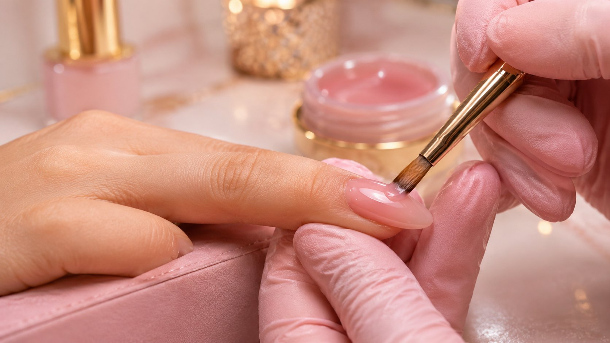

Advanced Application
& Finishing
Develop a deliberate approach to product control, refinement and a polished final result while following the requirements of the chosen product system.
Control the application. Refine with purpose. Inspect every detail.
By the end of this lesson…
- Plan product placement for a consistent, balanced enhancement.
- Use controlled application to reduce flooding, excess bulk and uneven surfaces.
- Refine shape and surface without compromising the natural nail.
- Recognise finish defects and decide how to correct them safely.
- Complete a systematic final inspection and client aftercare explanation.
Start with the nail in front of you
A refined finish begins before product touches the nail.
- Assess the natural nail, skin and existing product condition.
- Confirm the service, length and shape are suitable for the client.
- Choose compatible products and the manufacturer's approved lamp system.
- Plan structure and product quantity for each nail.
- Keep the work area organised so tools and products remain controlled.
Pause before you apply
Do not proceed over damaged or compromised nails, active skin concerns, or an enhancement that needs safe removal first.
Use a controlled amount
- Load the brush according to the product's viscosity and instructions.
- Place product deliberately rather than spreading a large amount at once.
- Guide material with light, controlled strokes.
- Keep a safe margin from the skin and sidewalls.
- Check the surface and profile before curing, as directed by the system.
Balance, transitions and proportion
A refined enhancement should look intentional from more than one viewing angle.
Side profile
Review the arch, apex position and smooth transition.
Top view
Check symmetry, sidewalls and consistent shape.
Free edge
Check thickness, alignment and a clean finish.
File with a clear purpose
- Allow the product to cure exactly as specified by the manufacturer before filing.
- Choose an appropriate file or e-file bit and use the correct technique for your training level.
- Refine sidewalls, free edge and surface transitions with controlled pressure.
- Keep checking the nail from top, side and end views.
- Stop before the natural nail is exposed or thinned.
Keep the process calm and consistent
Work one nail at a time when appropriate for the product system, checking placement and surface before moving on.
Confirm the nail and product are ready.
Apply a controlled amount.
Check skin clearance and structure.
Use the approved lamp and schedule.

Create a clean, even finish
- Remove dust and cleanse only as instructed by the product system.
- Apply the designated finish product evenly, without touching the skin.
- Seal the free edge only when required by the system.
- Cure with the approved lamp and exact manufacturer schedule.
- Complete any final wipe or aftercare step specified by the manufacturer.
Inspect before the client leaves
| Check | Look for | Action if needed |
|---|---|---|
| Shape | Symmetry and consistent outline | Refine only if safe and appropriate |
| Structure | Balanced profile and suitable thickness | Reassess; do not disguise weakness |
| Surface | Smooth, even finish without visible defects | Follow system-approved correction |
| Skin clearance | No product touching skin | Remove uncured product safely before curing |
| Cure | Correct lamp and full manufacturer schedule | Never guess or shorten cure time |
Recognise the issue before correcting it
Check product control, brush movement and whether refinement is appropriate.
Keep product off skin; remove uncured material safely before curing.
Reassess structure, length and compatibility rather than adding unnecessary bulk.
Complete a finishing audit
Use a practice hand, training tip or supervised model.
- Plan the structure and product amount for the chosen nail shape and length.
- Demonstrate controlled placement while maintaining skin clearance.
- Inspect the top view, side profile and free edge.
- Identify one possible finish defect and explain a safe correction.
- Complete a final quality checklist and client aftercare explanation.
Build a repeatable process that prioritises control, safety and consistency.
Knowledge check
Answer all five questions first. Your score and explanations will appear after you submit your completed quiz.
1. What should guide your application plan?
2. Why is controlled product placement important?
3. What is a safe approach to refinement?
4. What determines the correct curing process?
5. What belongs in a final quality check?
Answer all five questions, then submit your answers.